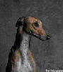

The dogs really enjoy themselves on the race track and in training, as I should know. Our greyhound just loves the sound of the hare going around the track and all the running around. But, after their race days are over it is important to remember that greyhounds still need all that attention. It makes me so angry to see abandoned greyhounds found in pitying states by the ISPCA and RSPCA but there are organisations out there to help. They are all over the USA, Britain, New Zealand and Ireland and Canada. They make it possible to adopt these unwanted dogs and give light at the end of the tunnel for those who never make it in the racing world. It is nice to know some people do care about these animals because after all, they have feelings too.

<Previous 
Contents
External Links:
http://corbis.com
http://www.greyhoundmonthly.com
http://www.petsmart.com
http://www.akc.org